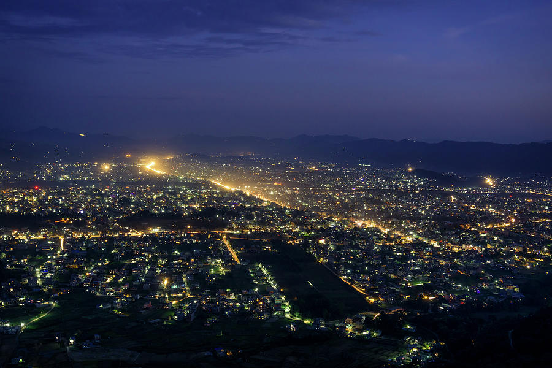
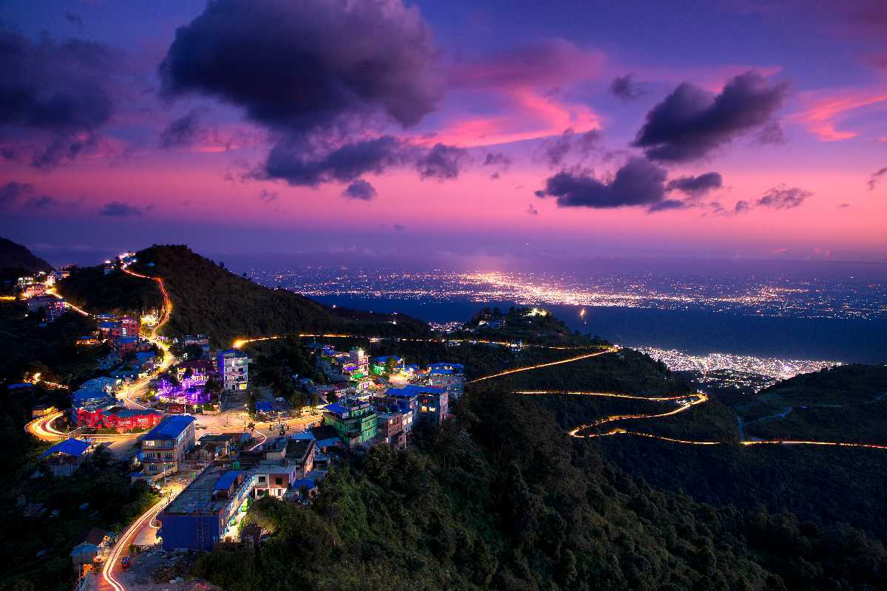
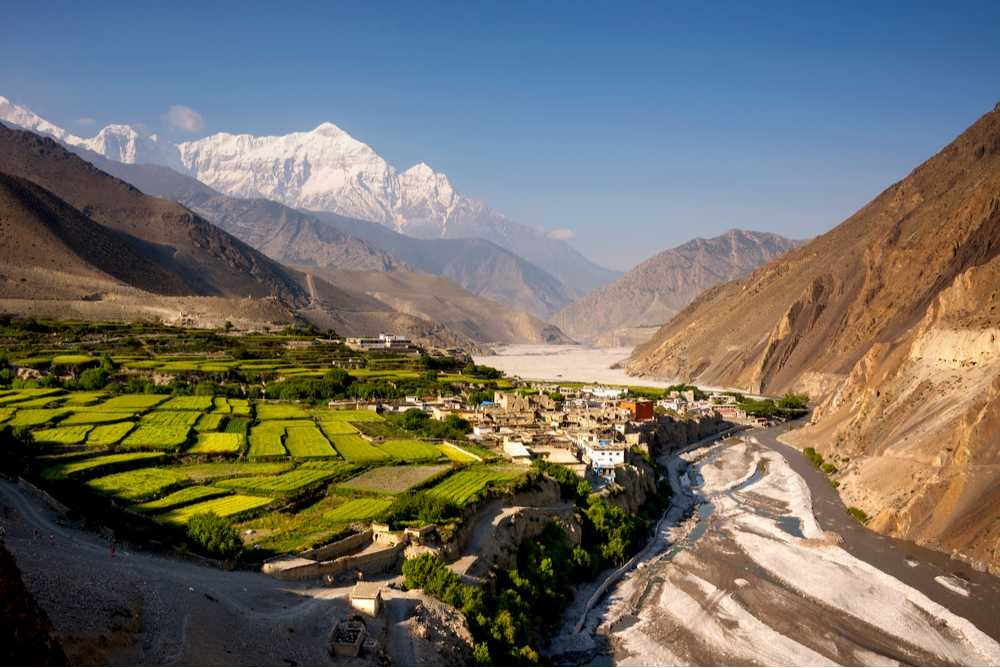
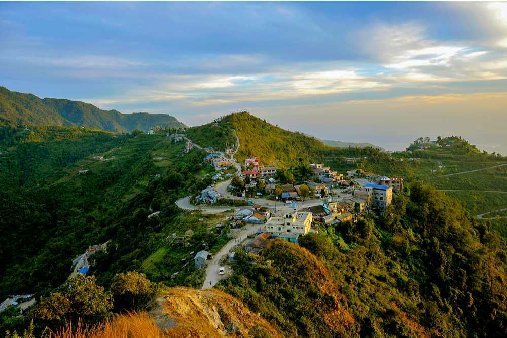
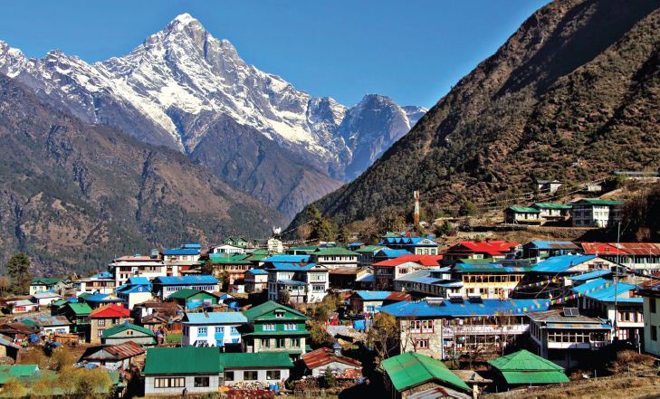
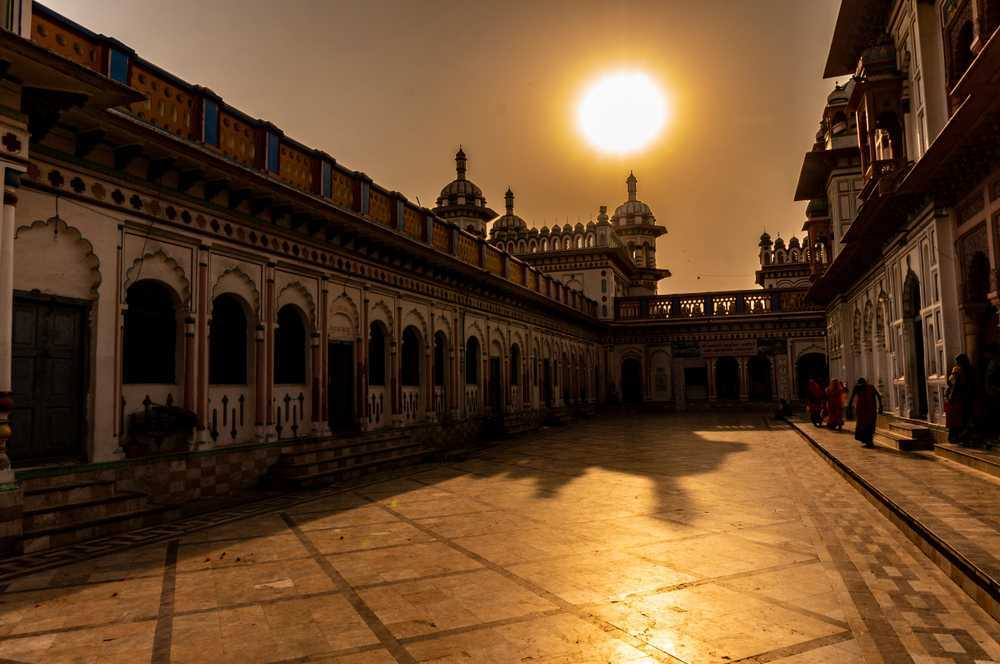

Sprawled over its namesake valley surrounded by Himalayan mountains, Kathmandu is Nepal’s capital and most-visited destination, full of ancient temples, golden pagodas, natural beauty and fascinating villages. At an elevation of 4,344 feet, Kathmandu marks the confluence of the Bagmati and Vishnumati rivers. One can find excellent trekking options of the world’s tallest peaks, stunning Indo-Tibetan and Newari craftsmanship, UNESCO-listed heritage landmarks and delicious food here.
Kathmandu is the gateway to exploring Nepal’s essence. Amidst the old city’s maze-like alleyways is the 1627-built Durbar Square, where locals frolic during Indra Jatra masked dance festival. Swayambhunath Stupa, Pashupatinath Temple, Monkey Temple and Boudha Stupa are some more eminent religious establishments. Outdoor enthusiasts flock to Nagarkot, Rani Pokhari Lake and Champadevi Hill for hiking, bungee jumping, rafting and mountain climbing. Learning about Buddhism at Kopan Monastery, buying pashminashawls and trinkets at Indra Chowk and Thamel’s markets and digging into steaming momos are great ways to enhance the experience.
From courtyards of drying chillies and rice, incense wafting out of shrines, national museums, and contemporary Nepali art galleries to hobbit-sized workshops, bustling bazaars, rickshaws, Thukpa and Everest beer, Kathmandu offers something unique for every tourist, devotee, backpacker, history buff, foodie and shopaholic.

Pokhara, the City of Lakes, is the ultimate paradise in the Himalayas and has always been at the front position in terms of tourism in Nepal. Its spectacular backdrop of snowy peaks, serene lakes and surrounding greenery make Pokhara a natural pristine paradise for those visitors who are in search of exotic destination for relaxation. Pokhara, the starting point for most of the treks in the Annapurna region, enhances to get true experience of mountain adventure in the Himalayas.
Pokhara has been the center of attraction for travelers across the globe due to its unique topographical structure, breathtaking scenic beauty and cultural importance.Mt Machhapuchchhre, Annapurna Himalaya Range, Nilgiri along with 20 other beautiful mountains and a total of nine lakes including Fewa and Begnas can be observed in the vicinity of Pokhara. Pokhara is rich in terms of mystical caves like Mahendra, Chamero, Gupteshwor, Sita, Crystal, Crazy and Devi’s Fall.
Pokhara is full of natural, cultural, and geographical landmarks and among such are Phewa Lake, Devi’s Fall, World Peace Pagoda, and Numerous caves in the region.Either a scenic drive or a tremendous mountain flight brings visitors in Pokhara.
Different museums which reflect the traditional lifestyle, and cultural aspects of local people are found in Pokhara and among them are:The International Mountaineering Museum, Gorkha Memorial Museum, Regional Museum, Annapurna Natural History Museum and Gurung Museum.Paragliding is one of the top attractions of Pokhara which helps travelers to enjoy the breathtaking beauty of the valley and the surrounding Himalayas.Pokhara is trekking junction in Nepal and it prominently popular for mountain trails in the Annapurna region.

Dharan is a city located near the Southeastern border of India and is a replica of Indian culture and tradition. Dharan is the gateway to the Mahabharat hills and is one of the biggest pilgrimage locations in Nepal. This low-lying hilly region is extremely clean, colourful and culturally diverse as well as a centre for football in Nepal, hence it being called 'mini-Brazil'. Located in the Sunsari District of Eastern Nepal, the city does not have extreme climates, making it a pleasant destination for tourists throughout the year.
Tourists mainly visit this place for its natural beauty as well as take part in activities like golf, hiking to Namche, driving to Bhedetar hill station, picnicking at Raja Rani Lake and visiting places like Tamar Khola, Yalamber Park and Bhanu chowk. A few historical and religious sites to visit in Dharan are Buddhasubba Temple, Pindeshwor Temple, Panchakanya Temple, Shiv Jatta, Vijaypur Hill and Dantakali Temple. Apart from these, there are many local pubs and bars in Dharan, making it a major tourist attraction in Nepal.

Mustang is known for its trekking tours and mountain sightseeing. Elevated at an altitude of 3840 kilometres, this city is divided into two parts: Lower and Upper Mustang. Even though it is relatively unexplored, this city is a great destination for those who want to immerse in Tibetan culture as well as in Nepalese lifestyle as it is located near the Tibetan Plateau.
Lower Mustang is well-known for natural scenery while upper Mustang is famous for its trekking and hiking trails, monasteries, caves and local tribes. This destination is rich in vegetation with a range of rhododendron plantations, apple fields and is strong with Buddhist culture. Visitors get to see the lifestyle of the mountain people, their day-to-day routines and their customs. Visitors can take a look at a number of Tibetan shrines, monasteries, caves and villages in order to learn about the “Mini Tibet in Nepal”. All in all, this North-West part of Nepal has a rugged and mystical reputation and is a great destination for backpackers, trekkers or those who want a vacation away from the commercial life and want to spend some time in the Himalayas.

Biratnagar is a metropolitan city located near the Indian border and is the capital city of Province No.1 in Nepal. Biratnagar is popular for its Jute Mills - the first large scale industry of Nepal and the famous Kali Mandir that holds high religious importance in Hinduism in the country. Named after King Virat, the city serves as the entrance point to multiple destinations of Eastern Nepal such as Baraha Chhetra and Ilam. Bustling weekly markets are held here in different areas of Biratnagar which a tourist attraction as spices and handicrafts are sold here.
Being a major hub for exploring places in eastern Nepal, Biratnagar is well-connected by bus and train services from most parts of the country. Biratnagar Airport is the busiest domestic airport in Nepal after Pokhara. For getting around Biratnagar, rickshaws, taxis and motor vehicles are easily available. While auto rickshaws (called Tempos) are available for a longer commute, electric rickshaws are the most used local transport in Biratnagar.

Located in the Khumbu area of the Solukhumbu district in north-eastern Nepal, Lukla is a small town perched at the height of 2,860 metres above the sea level. While many would describe the place to be just an airport and a strip of hotels, this quaint little town definitely offers much more than that. With the development of the airport here, Lukla started to gain more and more popularity, and today it has become a popular place for tourists who further wish to visit the Himalayas. In fact, once trekkers reach Lukla, they will need only two additional days to reach the village Namche Bazaar, which is an altitude acclimatisation stop for those who are planning to continue further on. However, trekking is not the only thing that this town is famous for. It is also reputed, (or rather notorious!) for being one of the scariest airports all across the world, which has one of the most dangerous landings. That being said, one cannot deny that this airstrip has made the Everest region accessible to numerous people, and many more and not just mountaineers can now explore the beauty and grandeur of this place.
Although Lukla means the place which houses many goats and sheep, few of these are found in the area these days. What the place does, however, house, other than the airport that services the region, are the variety of shops and hotels that cater to tourists and trekkers, providing them with Western-style meals and trail supplies. The town also boasts of having two expensive and up-scale places where visitors can stay and enjoy luxuries such as hot tubs in the laps of the Himalayas. A couple of small hotels, which are relatively simple, can also be found here. What was once a tiny farming community has now become a huge trekkers' town, since the airport that Lukla houses is the region's sole airport, and thus all trekkers who visit the region enter and exit from this town only.

Janakpur is a city in Nepal which is believed to be the birthplace of Goddess Sita and the place of her marriage with Lord Ram. Also known as the City of Ponds, Janakpur boasts of more than seventy ponds that dot its verdant landscape. Here you can learn more about the ancient and revered Hindu epic,the Ramayana and its significance today. Visit the actual sites mentioned in the great epic and listen to local lore as well!
The city is located in the Terai region of Nepal and is the administrative headquarters of Dhanusa district. The Ram Janaki Temple is the main attraction in Janakpur. The centre of Mithila culture, Janakpurdham is also one of the revered sites on the holy Parikrama (route undertaken by devout Hindus) along with Ayodhya, Kashi and Brij in India.
The pleasant weather, the grand and colourful festivities through the year, the stunning architecture of the temples and the friendly locals make Janakpur a favourite spot for tourists and pilgrims alike.